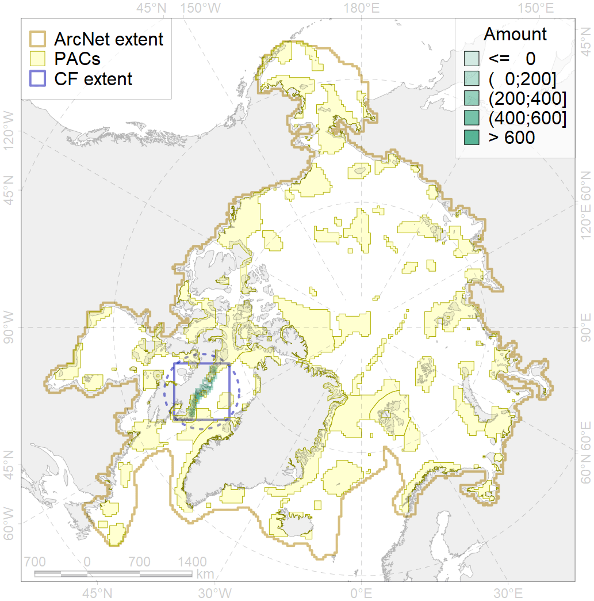
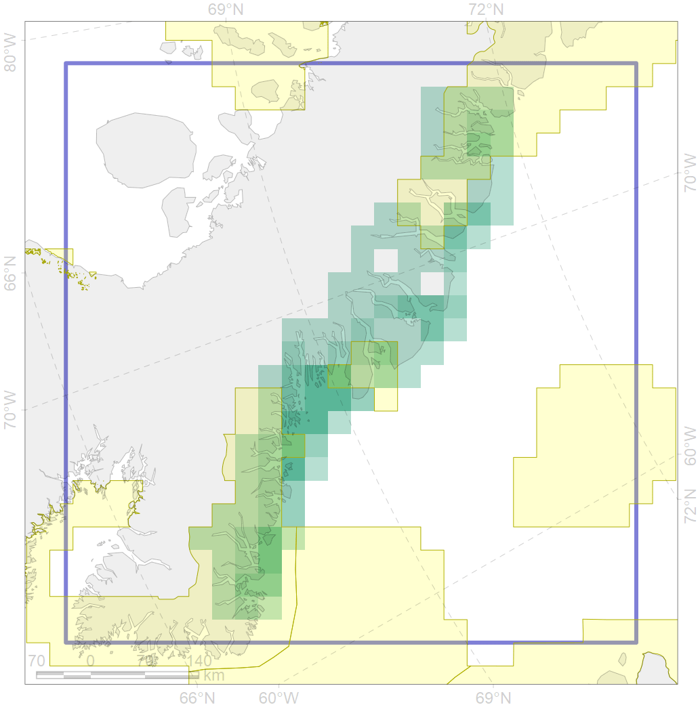

5074

| CF ID | 5074 |
| CF Name | Narwhal Eeast Baffin Island stock summer distribution |
| Time Period | not specified |
| Source(s) | GROM |
| Seasonality | June-September |
| Depth Horizon | 0-300 |
| Methodology | Satellite tagging, aerial surveys, traditional ecological knowledge |
| Author Name | Filatova |
| Notes | |
| Conservation Target Set in the Scenario | 0.48 |
| Conservation Target Achieved in the Scenario | 0.503 (Scenario: 104.8%) |
| PAC ID | Proportion in the PAC | Contribution to ArcNet Target Achievement | PAC’s Contribution to the Achieved Target |
|---|---|---|---|
| 46 | 26.5% | 53.2% | 50.7% |
| 50 | 7.9% | 14.0% | 13.3% |
| 52 | 11.1% | 20.1% | 19.2% |
| inner | 45.5% | 87.3% | 83.3% |
| outer | 54.5% | 17.5% | 16.7% |